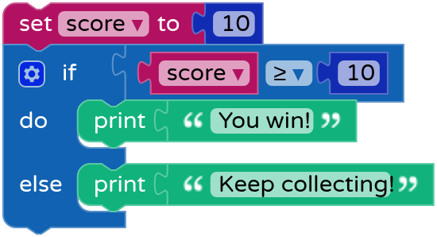

If and else
Show a win message when the player reaches ten points.
Blockly

GDScript
var score = 10
if score >= 10:
print("You win!")
else:
print("Keep collecting!")The Blockly test becomes the expression after if. A colon starts each branch, and indentation puts a statement inside it. The else branch runs when the test is false.
Try it in Godot
Run the scene with scores of 9, 10, and 11. Then change >= to > and predict which result changes.
Check your result
With >=, the player wins at 10 and 11. With >, only 11 wins. Testing 10 catches the difference between the two rules.